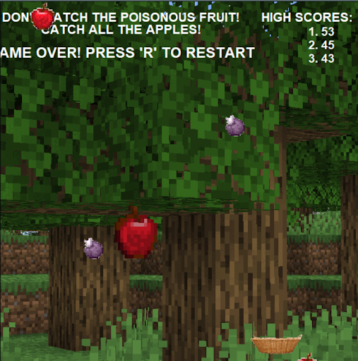
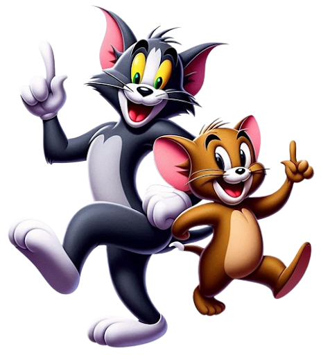

The Chipotle Bowl Project by Chetan Reddy Yanamala and Yatish Yanamala is an interactive program that allows users to customize a bowl by selecting toppings, which are then visually represented using the Turtle module. With 32 possible combinations, the program translates user choices into simplified graphical elements, such as a green line for guacamole or a circle for beans. The project overcame challenges like centering the rice using the `.dot` method instead of `.circle`. The code includes specific implementations for beans, sour cream, and chicken/vegetables, demonstrating the flexibility of the program in generating various bowl designs.
Our Minecraft game challenges players to catch falling apples in a basket while navigating an immersive setting. With user input for movement, a progressive difficulty system, and a three-strike rule, players must react quickly to avoid losing lives. A dynamic scoreboard tracks scores, and a leaderboard with long-term memory keeps records. The game increases the drop rate of apples and evil chorus fruits to be avoided over time, adding excitement and challenge.
In this fast-paced Tom and Jerry-inspired game, you play as the cunning cat, dashing across the screen to catch sneaky rats while dodging fierce hounds charging in from the sides. As the game progresses, the rats get quicker, and the dogs become more unpredictable, forcing you to react swiftly to survive. With a three-strike rule keeping the tension high, every move counts—miss too many rats or get caught by a dog, and it's game over! A dynamic scoreboard tracks your success, while a long-term leaderboard lets you compete for the top spot. Stay sharp, move fast, and prove you're the ultimate rat-catcher!